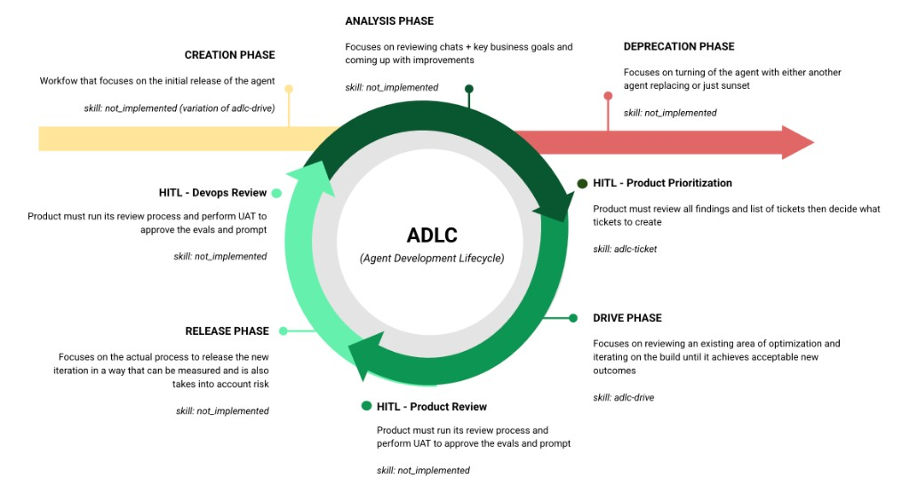

Agent Development Lifecycle (ADLC)
The full lifecycle for building, optimizing, and managing Agentforce agents.

Entry Point
Triggered by a business decision, human chat volume analysis, or an Analysis finding that requires a net-new agent. Handles requirements, topic architecture, action/data flow setup, and scaffolding (Flows/Apex) — then hands off to Drive for iterative instruction writing and testing.
adlc-create — setup + architecture, then delegates to adlc-driveThe Continuous Loop
Reviews production session traces, CSAT data, business goals, and user feedback to identify what's working and what needs improvement. Produces prioritized findings that feed into ticket creation — or flags the need for a new agent (exits to Creation).
adlc-analysis — coordinates adlc-optimize (observation), testing-analysis, and external data reviewProduct reviews analysis findings, decides priority, and creates drive-ready tickets. Scores ticket completeness (requirements, acceptance criteria, examples, baseline) and flags scope or eval impact before Drive begins.
adlc-ticket — ticket readiness scoring and authoring assistantTakes a ticket or goal, discovers the current agent state, plans the approach, executes instruction changes iteratively with testing at each step, and presents verified results. The core optimization engine — used by both existing agents and new agents coming out of Creation.
adlc-drive — orchestrator that delegates to adlc-discover, adlc-optimize, adlc-test, and the playbookProduct validates eval results against acceptance criteria, performs UAT, and approves the prompt for release. Intentionally separate from Drive — the skill that builds shouldn't judge its own work.
adlc-uat — independent evaluator, run by product ownerExecutes the deployment with risk controls — QA regression eval (8x runs), baseline promotion, proctor/feature flag ramp strategy, rollback plan, and post-deploy monitoring.
adlc-release — coordinates adlc-deploy, adlc-test (QA regression), and baseline promotionDevOps validates deployment health, confirms rollout metrics are within thresholds, and signs off before the next analysis cycle begins. Closes the loop.
adlc-devops — post-deploy validation and sign-offExit Point
Manages end-of-life — deactivating an agent, migrating to a replacement, archiving baselines and eval history, and ensuring no active channels point to a deprecated agent. Can be triggered from any point in the loop.
adlc-deprecate — deactivation, migration, archivalSkill Status
Orchestrators coordinate the lifecycle phases. Sub-skills are the building blocks they delegate to.
| Skill | Role | Phase | Status |
|---|---|---|---|
| ORCHESTRATORS | |||
adlc-create | Orchestrator | Creation (entry) | Not started |
adlc-analysis | Orchestrator | Analysis | Not started |
adlc-ticket | Orchestrator | HITL: Prioritization | ✅ Ready |
adlc-drive | Orchestrator | Drive | ✅ Ready |
adlc-uat | Orchestrator | HITL: Product Review | Not started |
adlc-release | Orchestrator | Release | Not started |
adlc-devops | Orchestrator | HITL: DevOps Review | Not started |
adlc-deprecate | Orchestrator | Deprecation (exit) | Not started |
| SUB-SKILLS (building blocks) | |||
adlc-author | Executor | Generates .agent script files | ✅ Ready |
adlc-discover | Executor | Resolves agent metadata from org | ✅ Ready |
adlc-optimize | Executor | Reads/writes instructions via Tooling API | ✅ Ready |
adlc-test | Executor | Runs smoke + bulk eval tests | ✅ Ready |
adlc-scaffold | Executor | Generates Flow XML + Apex stubs | ✅ Ready |
adlc-deploy | Executor | Deploys agent bundles to org | ✅ Ready |
adlc-run | Executor | Executes actions via REST API | ✅ Ready |
adlc-feedback | Utility | Submits skill feedback | ✅ Ready |
testing-analysis | Utility | Triages Testing Center CSV exports | ✅ Ready |
Setup
Everything you need to get started.
Repository
Custom orchestration layer built on top of almandsky/agentforce-adlc
What This Adds
| Component | What it does |
|---|---|
| adlc-drive | Goal-driven orchestrator — takes a JIRA ticket or goal, plans changes, executes iteratively, evaluates, presents results |
| adlc-ticket | Create or evaluate tickets for drive — standalone or called by drive to assess readiness |
| Eval framework | Versioned scoring, baselines, ticket-scoped attempts, topic-agnostic regression comparison |
| Playbook | Prompt engineering principles with rule levels (HARD/STRONG/SOFT) and tie-breaker guidance |
| Patches | Additions to 3 base skills: SOQL resolution (discover), Tooling API (optimize), CSV export (test) |
| JIRA integration | Read-only access via official Atlassian MCP server (OAuth SSO) |
Prerequisites
| Requirement | Check | Install |
|---|---|---|
| Cursor IDE | ~/.cursor/ exists | cursor.sh |
| Salesforce CLI (sf v2.x) | sf --version | npm install -g @salesforce/cli |
| Python 3.9+ | python3 --version | brew install python |
| Node.js | node --version | brew install node |
| Salesforce Org with Agentforce | sf org list | Contact your Salesforce admin |
| Atlassian Account (for JIRA) | Can access your JIRA instance | SSO login — no API token needed |
Installation
cd agentforce-adlc-orchestrators
This installs the base skills (from agentforce-adlc), custom skills, patches, and eval framework.
Add to ~/.cursor/mcp.json:
"mcpServers": {
"atlassian": {
"url": "https://mcp.atlassian.com/v1/mcp"
}
}
}
Uses OAuth SSO — no API tokens needed. You'll authenticate via browser on first use.
Restart Cursor to load the new skills and MCP server. Then try:
adlc-drive ESCHAT-1234 # execute a ticket
What the installer does
| Step | What | Where |
|---|---|---|
| 1 | Install base skills from agentforce-adlc | ~/.cursor/skills/adlc-* |
| 2 | Install custom skills (drive, ticket) | ~/.cursor/skills/adlc-drive/, adlc-ticket/ |
| 3 | Apply patches to 3 base skills (additive only) | discover: SOQL resolution, optimize: Tooling API, test: CSV export |
| 4 | Set up eval framework | evals/ in your project |
| 5 | Copy project documentation | PROJECT-MAP.html, PROJECT-MAP.md |
Safe to re-run — patches check for existing content before applying. Existing files are preserved.
Repo Structure
Click folders to expand.
Skills — From Repo (unchanged)
Installed from agentforce-adlc. Do not modify.
- adlc-author/ Generate .agent files from requirements
- adlc-deploy/ Deploy, publish, activate
- adlc-feedback/ Collect feedback
- adlc-run/ Execute actions via REST
- adlc-scaffold/ Generate Flow/Apex stubs
- agentforce-testing-analysis/ CSV test analysis
Skills — From Repo + Our Additions
Original content untouched. We added new sections.
- adlc-discover/ + Section 0: SOQL-based agent/topic resolution
- adlc-optimize/ + Section 3.UI: Tooling API for UI-built agents
- adlc-test/ + CSV export, HTML unescape, contextVariables format
Skills — Custom (created by us)
- adlc-drive/ Goal-driven orchestrator — reads playbook, delegates to sub-skills
- adlc-ticket/ Create/evaluate tickets for drive — standalone or called by drive
Project — Eval Framework (all custom)
- evals/
- prompt-engineering-playbook.md Principles + rule levels
- drive-architecture.md Delegation map
- ticket-guides/ Everything related to adlc-ticket
- ticket-authoring-prompt.md How to write drive-ready tickets
- ticket-evaluation-samples.md 15 real tickets evaluated (training material)
- ticket-rewrites-internal.md 11 weak tickets rewritten (internal only)
- ticket-template.md Generic JIRA template
- ticket-template-generalfaq.md Pre-filled for GeneralFAQ
- eval-config/ Versioned methodology
- scoring/current/
- run_regression.py
- analyze_response.py
- utterances/current/
- all-topics-102.yaml
- scoring/current/
- scripts/
- generate_report.py Topic-agnostic regression
- indeed-service-agent/
- baselines/v21/ Production baseline
- instruction-invoice.txt 7,422 words
- raw-outputs.csv 850 rows
- tickets/PROJ-345-compact-invoice/
- goal.md / config.json / STATUS.md
- attempts/ 7 attempts, #04 deployed
- 04-v22c-fixed-explain/ ✅ Winner
- baselines/v21/ Production baseline
Project — Salesforce DX (auto-generated)
- force-app/ Salesforce DX
- aiEvaluationDefinitions/ Testing Center specs (deployed to org)
- bots/ Agent metadata (retrieved from org)
How adlc-drive Works
Click each step to expand details. Shows what's called, what files are touched, and who owns each step.
getJiraIssuemcp_auth for browser SSO.adlc-ticket/SKILL.md. Scores readiness. Flags gaps, scope issues, eval criteria impact. Also usable standalone.Do NOT: query the org, infer agent/version from project files, use fixed checklists.
→ Writes: evals/{agent}/tickets/{key}/goal.md
prompt-engineering-playbook.md to understand how topics, actions, templates, and data flow work. Then formulates questions based on the ticket + architecture knowledge. No fixed question list — reasons from context.At minimum asks: which agent, which version, which org, edit strategy. But adds architecture-informed questions like "do actions feed data into the templates we're changing?"
→ Stores: agent_api_name, plugin_definition_id, instruction_def_ids
baselines/{topic}/utterances.txt ONLY. Never reuse old output CSVs. Combine with ticket attachments and derived utterances. Coverage check. Min 5 multi-turn. Max ~50 per ticket.→ Writes: CHANGELOG.md
prompt-engineering-playbook.md for editing principles. Makes targeted edit based on goal. One change per iteration.→ Writes: attempts/NN-name/instruction.txt
adlc-optimize/SKILL.md. Backs up current instruction, then deploys the new one.→ API: PATCH /tooling/sobjects/GenAiPluginInstructionDef/{id}
→ Saves: attempts/NN/smoke-results.csv
generate_report.py. If acceptance met → Phase 6. If not → iterate back to 5.1.→ Saves: raw-outputs.csv, eval-report.html
→ Updates: .adlc-drive-state.json
→ Writes: eval-report.html, CHANGELOG.md, STATUS.md
1. Confirm with user: "Attempt NN passed. Promote to baseline v[N+1]?"
2. If QA-level eval (8x runs) doesn't exist yet, run one before promoting
3. Copy winning attempt artifacts to baseline:
→ evals/{agent}/baselines/v{N+1}/ instruction-{topic}.txt ← from attempts/NN/ raw-outputs.csv ← QA 8x run (NOT dev 4x) metadata.json ← version, date, ticket, scoring version eval-report.html
Mini iterations (attempts/) stay in the ticket as audit trail. Only the winner promotes.
adlc-deploy separately. Note proctor flag strategy if recommended. Note design review items if tagged. Clean up state file.